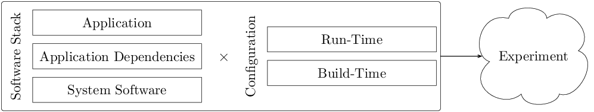

Introduction¶
Computer system benchmarking provides a means to compare or assess the performance of hardware or software against a point of reference. Because of some of the reasons discussed here, achieving experimental reproducibility in this domain is challenging. To aid in this, we are developing an extensible software framework named bueno that helps support what we call well-provenanced computer system benchmarking, or well-provenanced benchmarking for short. In this context, a well-provenanced benchmark maintains to the extent possible the minimal required set of data needed to share, replicate, and revisit a prior result up to a given standard. To that end, the bueno project aims to provide convenient access to mechanisms that aid in the automated capturing of relevant eatures that define a sufficiently precise experiment. The following provides additional motivation, followed by a summary of bueno’s current software architecture, feature set, usage, and methodology toward this goal.
Motivation¶
Experimental reproducibility is a crucial component of the scientific process. Capturing the relevant features that define a sufficiently precise experiment is a difficult task. This difficulty is mostly due to the diversity and non-trivial interplay among computer platforms, system software, and programs of interest. To illustrate this claim, consider the interconnected relationships formed among the components shown in the figure below. Here, we define an experiment as the Cartesian product of a given software stack and its configuration. The elements shown in the figure below are described as follows:
System Software: the OS, compilers, middleware, runtimes, and services used by an application or its software dependencies. Examples include Linux, the GCC, MPI libraries, and OpenMP.
Application Dependencies: the software used by the application driver program, including linked software libraries and stand-alone executables. Examples include mathematical libraries, data analysis tools, and their respective software dependencies.
Application: the driver program used to conduct a computer system benchmark, including sequential and parallel programs with and without external software dependencies. Examples include micro-benchmarks, proxy applications, and full applications.
Build-Time Configuration: the collection of parameters used to build an application and its dependencies. This includes preprocessor, compile, and link directives that have an appreciable effect on the generated object files and resulting executables. Examples include whole program optimization (WPO) and link-time optimization (LTO) levels, which may vary across components in the software stack.
Run-Time Configuration: the collection of parameters used at run-time that have an appreciable effect on the behavior of any software component used during a computer system benchmark. Examples include application inputs and environmental controls.
In summary, contemporary computing environments are complex. Experiments may have complicated software dependencies with non-trivial interactions, so capturing relevant experimental characteristics is burdensome without automation.
Software Overview¶
In this section, we begin with an overview of bueno’s core software architecture. We then provide a brief introduction to container technology and motivate its use in bueno. Finally, we summarize bueno’s command-line interface (CLI) and module services.
Core Framework¶
bueno is an open-source (BSD-3) software
framework written in type-annotated Python 3. Its internal software architecture
is straightforward and organized into three major components: core,
public, and service. The core component implements the
infrastructure used internally within bueno. The public component, detailed
in Module Services, implements a collection of Python modules made
available to Python programs executed under bueno’s supervision. We call these
programs bueno run scripts, and they are the programmable interface that
drives the bueno framework. Finally, the service component, detailed in
Command Line Interface Services, implements the infrastructure made
accessible through a CLI that carries out a specific task, for example,
executing a run script.
Use of Container Technology¶
Container technology has garnered attention recently, especially in cloud and HPC environments. This attention is well-deserved, as this approach has demonstrated broad utility in software development and deployment tasks. In the context of container-enabled experimental reproducibility, we note the following properties that serve our work’s ultimate goal:
Data Encapsulation: Containers offer nearly complete encapsulation of a given software stack. This capability allows researchers the ability to revisit a prior experimental configuration. An example is conducting a post-mortem analysis of saved binary files to understand better the performance characteristics of a previous benchmarking result.
Low-Overhead Execution: The use of a containerized software stack introduces little to no appreciable overhead compared to its non-containerized analog.
Separation of Concerns: Container images can be built, shared, and later augmented to create a new base image, which in turn can be shared and augmented further. This process allows for a separation of concerns among a potentially large conglomerate of multidisciplinary expertise.
In summary, container technology is a promising avenue for capturing relevant features that define a sufficiently precise experiment. For this reason, bueno implements features that make use of containers to improve the likelihood of experimental reproducibility. Currently, bueno supports unprivileged container activation through Charliecloud.
Command Line Interface Services¶
CLI services are currently made available through bueno’s run command. The
run service coordinates container image activation and the execution of
bueno run scripts, a programmatic description of the steps required to conduct a
computer system benchmarking experiment. Currently, there are two image
activators implemented in bueno: charliecloud and none. The former uses
Charliecloud to activate a given container image. The latter is a pass-through
to the host, which offers a lower degree of reproducibility when compared to the
former.
Module Services¶
Because of the diversity among computer platforms, system software, and programs
of interest, program execution and subsequent analysis of their generated
outputs are expressed through Python programs executed by bueno’s run
service. A collection of Python utility modules is made available to these
programs to aid in conducting benchmarking activities. Example functionality
includes command dispatch to the host or container, logging, data asset
agglomeration, concise expression of structured experimental inputs, and
programmable pre- and post-experiment actions.